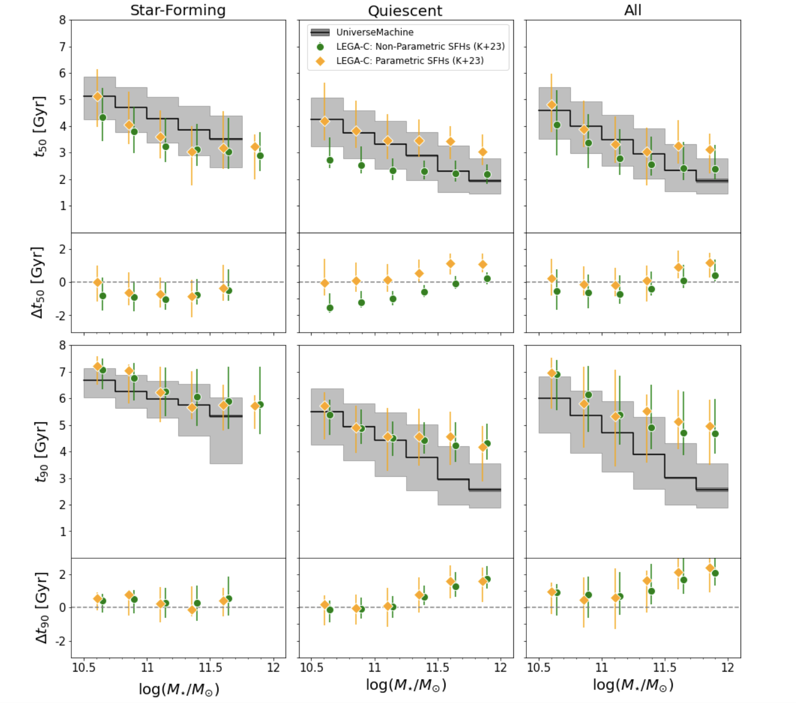
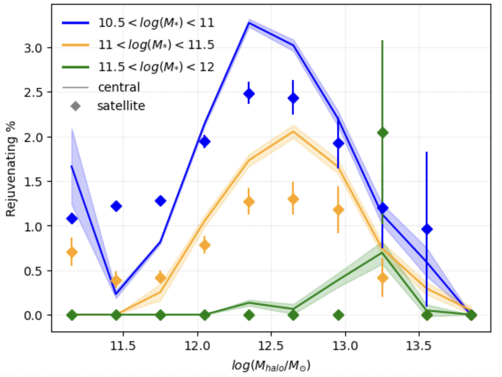

About Me
Education: UC Davis- PHD Candidate (fall 2024-)
University of Pittsburgh- B.S. in Honors Physics and Astronomy, Mathematics Minor, Magna Cum Laude (2020-2024)
Research Interests: Theoretical and observational astrophysics, galaxy evolution, rare galaxy phenomena, dark matter
Publications: Steel et al. 2024
Research
University of Pittsburgh - Advisor: Dr. Rachel Bezanson
I studied the assembly history of stars in galaxies at half the age of the universe using the UniverseMachine model,
a sophisticated galaxy-dark matter halo connection model that tracks N-body simulations across cosmic
times. With this, I find the discrepancies and similarities between simulations and observations from the
Large Early Galaxy Astrophysics Census (LEGA-C) Spectroscopic Survey to study where our current
understanding of the physics behind galaxy evolution might be incomplete.

I quantified the formation time scales of simulated galaxies (when these galaxies formed 50% and 90% of their total stellar mass) and
compared with those observed in LEGA-C. Here we found that the observational correlations between formation time and stellar mass are weaker
than predicted by the UniverseMachine and that this discrepancy is especially pronounced for the quiescent sample.
(Steel et al. 2024)

This work revolves around studying rare galaxies that deviate from traditional evolutionary paths and show a sudden episode
of star-formation after a long period of quiescence.
I investigated these rejuvenating galaxies in UniverseMachine simulations and compared them with observational evidence.
The goal is to quantify their number density and understand the physical processes that could be driving this phenomenon. Here, we see
that there is a peak dark matter halo mass that has highest amount of rejuvenating galaxies. (Kaushal+2024 in prep)
Poster Presentations
Testing the Star-Formation Histories of Massive Galaxies in the UniverseMachine Model at z∼ 0.8 with the LEGA-C Survey
Testing a Theoretical Model (“UniverseMachine”) for Galaxy Star Formation Histories Derived from the LEGA-C Survey
Contact
Email: czsteel@ucdavis.edu
Address: Physics Bldg, 1 Shields Ave, Davis, CA 95616